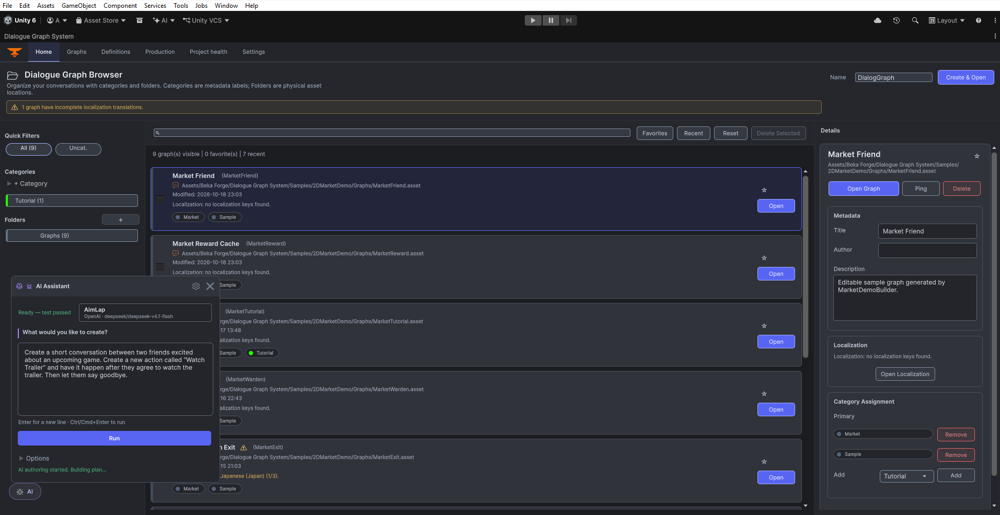
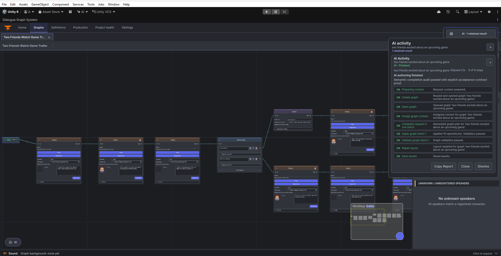

AI authoring in DGS
DGS 4.0 includes the AI Extension in the single DGS package. AI Providers is a separate connector required only for AI features. The DGS 4.0 integration requires the matching Providers 2.2 release, which is not yet published; the current public Providers listing is 1.0 and is not a compatible prerequisite. Graph authoring and runtime continue to work without AI.
Set up the editor
- Install the DGS 4.0 single package when that release is available. It includes Core, AI Extension, Camera Controller, Interaction, and Banter/Sound features; there is no separate AI Extension package.
- Install the separate AI Providers package only if you plan to use AI. Wait for the 2.2-compatible release before connecting it to the DGS 4.0 integration. The public 1.0 listing does not satisfy this requirement.
- Open
Tools > Beka Forge > AI Providers, create or select an API profile, check its endpoint and model, enter the credential into the masked local field, and run Test connection. See the provider setup guide. - Open the DGS dialogue editor, select the graph or node you want to work on, and open the AI authoring panel. A broad request can draft a new graph; a selected node gives the authoring flow a local editing context.



Prompt, plan, review, apply, validate
- Describe the task. Give the scene purpose, speakers, important choices, and intended outcomes. For example: “Create a short conversation between Arjan and Kira on a deserted island. Add one choice that lets the player ask for help or leave, and give both choices a clear ending.”
- Inspect the plan. The extension turns the request into typed graph operations and checks required identities and structure before applying. Read the operation list and any warnings; revise or retry if the plan misses a speaker, choice, condition, or outcome.
- Review the preview. Check the nodes, connections, names, and dialogue text that will change. A generated response is a proposal. Use the preview controls to choose whether to apply valid operations; do not apply an item whose effect you do not understand.
- Apply deliberately. Applying changes the selected graph through DGS authoring operations. The extension does not silently apply every provider response as raw graph data.
- Validate the result. Show the graph sidebar, select Validate, and click Validate Graph. Review the result, then inspect relevant connections, speaker fields, and condition routes in the Graphs workspace.


Focused edits
Select the intended node or branch before asking for a local edit. Keep the request specific, such as “Add a short action for lighting a cigarette after this line, then continue the same branch.” Confirm the preview is anchored to the intended branch before applying. For a broad new-scene request, clear the selection and describe the full scene rather than implying a local edit.
What AI does not do
- AI Providers credentials and provider profiles are not bundled into the DGS package or copied into graph assets.
- The editor remains the authority for graph identities and mutations; provider text is reviewed as a proposed change.
- AI authoring is optional. Existing graphs, DGS runtime, and non-AI editor workflows do not require an AI provider.
Editor extension hook
Tools that extend the DGS editor can query the public bridge registered by the AI Extension. Put this code in an editor assembly and use the live IDialogGraphOwner supplied by the host; do not construct or cache a graph owner yourself. The compatibility quick-action call is synchronous and may block while it waits for AI, so normal user workflows should use the DGS AI panel and its review flow.
using DialogSystem.EditorTools.Services;
using DialogSystem.EditorTools.Windows;
public static class DgsAiEditorExtension
{
public static bool TryRewriteSelection(IDialogGraphOwner owner, out string error)
{
var bridge = DialogGraphAiBridgeLocator.Current;
if (owner == null || bridge == null || !bridge.IsAvailable)
{
error = "The DGS AI Extension is not available for this editor scope.";
return false;
}
return bridge.TryRunQuickAction(
owner, DialogGraphAiQuickAction.RewriteDialog, out error);
}
}